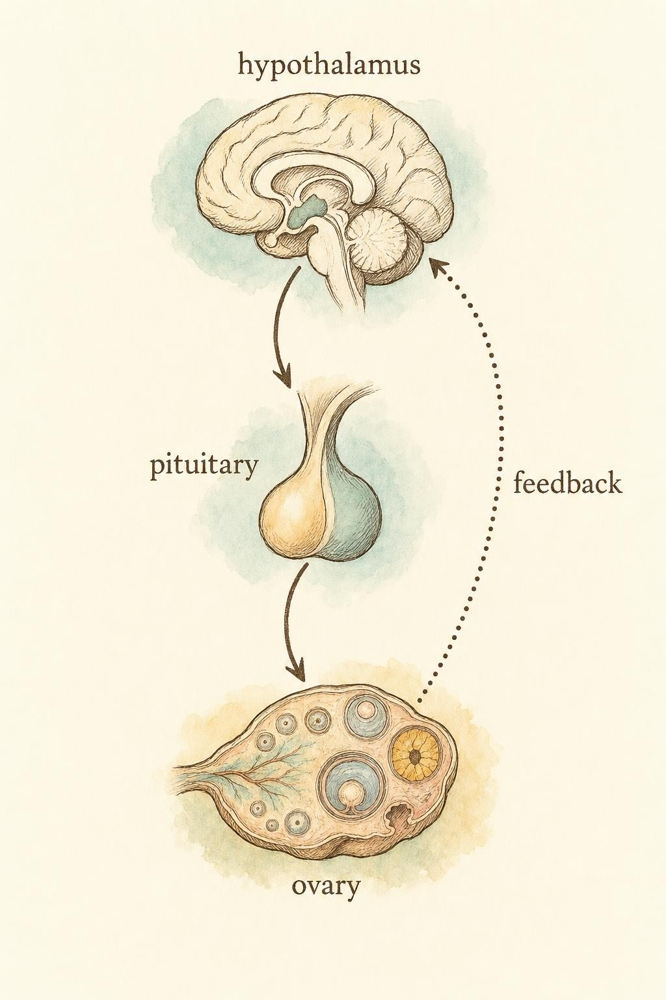
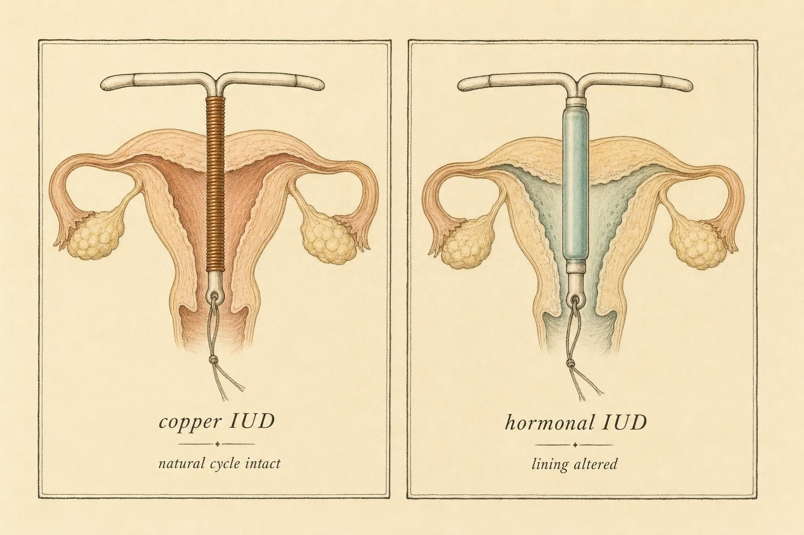

Rewriting the Signal: Contraception by Mechanism
Once you know the axis and the cycle, every method becomes a legible intervention in a system you already understand.
A question arrives in almost every conversation about hormonal contraception, usually phrased with more worry than the situation warrants: "My bleeding changed. Is something wrong with me?" If you have worked through the earlier chapters, you are unusually well equipped to answer. You know that the bleed at the end of a natural cycle is the visible consequence of an ovulation that already happened, weeks earlier, upstream. You know that the hypothalamic-pituitary-ovarian axis (hereafter the axis) runs the whole show through a rhythm of feedback. So when a method quiets that bleed or scrambles it, you can ask the right question: is the axis still cycling underneath, or has the method rewritten the signal on purpose?
That single reframe is the work of this chapter. We will not memorize brand names. We will sort methods by what they actually do to four things people most want to understand: ovulation, the cycle, bleeding, and the return of fertility after stopping. And we will keep one boundary firm throughout. This is education about mechanism. It is never advice about choosing, starting, or stopping any method. Those decisions belong to a person and their clinician.
The frame: four questions, one axis
Before the methods, the refresh. A natural ovulatory cycle is a conversation. The hypothalamus releases gonadotropin-releasing hormone in pulses. The pituitary answers with two gonadotropins: follicle-stimulating hormone and luteinizing hormone. Rising estrogen from a maturing follicle eventually flips a switch, and the pituitary fires a sharp luteinizing hormone surge. That surge is the trigger. Ovulation follows within roughly a day. The emptied follicle becomes the corpus luteum, which secretes progesterone to prepare the uterine lining, and if no pregnancy occurs, that lining is shed. The bleed you see is the closing punctuation of a sentence that began with the surge.
Every contraceptive we will discuss intervenes somewhere in that sentence. To keep the analysis honest, hold four questions ready for each method:
One: does it stop ovulation? Two: does it leave the natural cycle running, or replace it? Three: what does it do to bleeding, and is that bleeding a real menstrual period or an induced event? Four: how quickly does fertility return after stopping? Answer those four, grade the confidence of each answer, and you understand the method.

The loop every method edits: signal down, feedback up." data-image-idx="0" style="display:block;max-width:100%;max-height:75vh;height:auto;width:auto;margin:0 auto;cursor:pointer;">Combined hormonal methods: overriding the axis
Combined hormonal methods deliver both an estrogen and a progestin. This is the pill most people picture, and the mechanism extends to the combined patch and the combined vaginal ring, which differ in delivery route rather than in principle. The strategy is elegant and blunt at the same time: supply steady levels of both hormones from outside, and the axis reads the environment as already handled.
Here is the causal chain. Constant exogenous estrogen and progestin suppress the pituitary's output of gonadotropins. With follicle-stimulating hormone held low, follicles do not mature normally. Critically, the steady hormonal background prevents the estrogen spike that would otherwise trigger the luteinizing hormone surge. No surge, no ovulation. A mathematical model of the hormonal cycle showed this explicitly: synthetic estrogen and progestin prevent ovulation by suppressing pituitary gonadotropin output and blocking the luteinizing hormone surge, and the simulations reproduced how quickly a non-ovulatory state is established (Wright et al., 2020).
The ESHRE Capri Workshop Group (2001) added an important nuance that this course should not flatten. The main mode of action is inhibition of ovulation, driven chiefly by the estrogen dose in combined oral contraceptives. Lower-dose formulations, which are now the norm for safety reasons, lean more heavily on suppression of the luteinizing hormone surge and on disruption of the endometrial cycle to make up the difference. In other words, the lower the estrogen, the more the method depends on that final surge-blocking step rather than on shutting follicles down entirely.
This matters because ovarian activity is not fully switched off. A systematic review of 48 studies, using hormonal markers (follicle-stimulating hormone, luteinizing hormone, estradiol, anti-Mullerian hormone) and ultrasound markers (antral follicle count, ovarian volume), found that follicular development continues during hormonal contraceptive use but is significantly suppressed, with gonadotropin and estradiol levels reduced (D'Arpe et al., 2016). Lower-dose formulations allowed more "follicular escape," meaning some follicular growth slips through, which is exactly why the surge-blocking mechanism carries more of the load in those pills. The system is dialed down, not deleted.
What you see: the withdrawal bleed
Now the point this course is uniquely positioned to make. On a standard combined regimen, you take active hormone for a stretch and then either take placebo pills or remove the ring or patch for a hormone-free interval. During that interval, hormone levels drop, the lining that was maintained can no longer be sustained, and it sheds. That bleed is a withdrawal bleed. It is not a menstrual period.
The distinction is not pedantic. A true menstrual period is the downstream consequence of an ovulation that occurred. A withdrawal bleed is the response to a scheduled drop in externally supplied hormones. No ovulation preceded it. It carries no information about whether you ovulated, because you did not. This is why continuous or extended regimens, which skip the hormone-free interval, can safely reduce or eliminate bleeding altogether: there is no ovulatory event whose shedding you are obligated to complete. Continued combined use is associated with a thin, atrophic endometrium (The ESHRE Capri Workshop Group, 2001), and a thin lining simply has less to shed.
Keep this filed carefully, because it is the load-bearing idea for a later chapter. An absent or altered bleed on a combined method is an expected, medically induced change. It is a different phenomenon from a cycle going quiet because the axis is underfed. We will return to that contrast.
Progestin-only methods: same hormone family, quieter footprint
Remove the estrogen and keep only a progestin, and the mechanism shifts. Progestin-only methods include the progestin-only pill (sometimes called the mini-pill), the injectable, the implant, and the hormonal intrauterine device. Grouping them together is convenient but slightly misleading, because they differ dramatically in dose, in delivery, and therefore in how much of their effect is systemic versus local. This is where sorting by mechanism earns its keep.
Progestins act through several overlapping routes. They can suppress ovulation by dampening the gonadotropins and blunting the luteinizing hormone surge. They thicken cervical mucus into a barrier that impedes sperm. They thin and alter the endometrial lining, making it less receptive. Different progestin methods rely on these routes in different proportions, and often more than one operates at once. The honest position is that the relative contribution of each route is not equally well established, a point we will grade as we go.
The progestin-only pill
Traditional progestin-only pills deliver a low dose and are frequently described as working chiefly through cervical mucus thickening, with inconsistent ovulation suppression. Here the evidence deserves a caution. A pointed review examined the assumption that cervical mucus thickening is a reliable contraceptive mechanism and found that, despite how often it is cited, surprisingly little direct experimental evidence confirms the contraceptive effect of mucus changes for progestin-only methods (Han et al., 2017). The mechanism is plausible and probably real, but "probably real" is not the same as "well demonstrated." Newer progestin-only pills using drospirenone suppress ovulation more consistently, shifting the balance back toward the axis-level mechanism.
The etonogestrel implant
The subdermal implant is a different animal, and a much more effective one. A systematic review of 51 studies concluded that the implant achieves contraception primarily by suppressing ovulation, secondarily by altering cervical mucus and modifying the endometrium (Moray et al., 2021). Because it delivers a steady, sufficient dose of etonogestrel, ovulation suppression is its dominant and dependable route, which places it among the most effective reversible methods available. Its main drawback is not effectiveness but tolerability: irregular bleeding is the leading reason people discontinue it.
And that irregular bleeding is the same conceptual point again, in a new costume. On the implant, bleeding can be unpredictable, prolonged, infrequent, or absent. None of these patterns signals a problem with the axis or with fertility. They reflect the endometrium responding to a continuous progestin with no cyclic estrogen to organize it. The lining is being managed pharmacologically, so its behavior no longer reports on an underlying cycle.
Two devices, same shape, opposite logic
Both intrauterine devices sit in the uterus, but they operate on entirely different principles. This is the cleanest illustration in the whole chapter of why mechanism, not appearance, is the right sorting key.
The hormonal intrauterine device
The levonorgestrel intrauterine system releases a progestin locally, right at the endometrium. Because the dose is delivered where it acts, the systemic effect is comparatively small. A landmark review established that this device works predominantly through local endometrial effects, including glandular atrophy, decidualization of the stroma, and thickening of cervical mucus, with only minimal systemic ovarian suppression (Ortiz & Croxatto, 2007). For many users, ovulation continues. The natural cycle upstream is largely intact; the intervention is concentrated at the lining and the cervix.
The molecular signature confirms how active that local intervention is. Endometrial transcriptional profiling found that the levonorgestrel system produces pronounced changes in 2,509 genes, predominantly in immune and inflammatory pathways (Gemzell-Danielsson et al., 2020). The lining is not merely thinned; it is transformed. This is why bleeding on the hormonal device typically becomes much lighter over time, and often stops. That reduction in bleeding is again a medically induced change at the endometrium, and it can coexist with continued ovulation upstream. A person can be ovulating and barely bleeding at the same time. If the earlier chapters made bleeding feel like a reliable readout of the cycle, this is the case that complicates it.
The copper intrauterine device
The copper intrauterine device uses no hormones at all. Copper ions provoke a local inflammatory response and reach spermicidal concentrations in the fluids throughout the reproductive tract, primarily preventing fertilization while leaving the natural ovulatory cycle intact (Ortiz & Croxatto, 2007). Read that last clause carefully. The axis keeps cycling. Ovulation still happens. The luteinizing hormone surge still fires. The lining still builds and sheds on its own schedule.
The transcriptome study drives the contrast home in striking fashion: while the hormonal device rewrote thousands of genes, the copper device produced an endometrial transcriptome indistinguishable from ordinary luteal-phase endometrium (Gemzell-Danielsson et al., 2020). Molecularly, the copper device barely disturbs the lining's normal program. This is also why its most common side effect runs in the opposite direction from the hormonal device: bleeding tends to be heavier or more crampy, because the natural period is still occurring and the local inflammatory environment can amplify it. Two devices of the same shape, and the copper one leaves you with a real menstrual period while the hormonal one often abolishes bleeding entirely.

Same silhouette, opposite logic: one edits the lining, the other leaves the cycle running." data-image-idx="1" style="display:block;max-width:100%;max-height:75vh;height:auto;width:auto;margin:0 auto;cursor:pointer;">Return of fertility: reassuringly boring
The fourth question is often the most emotionally loaded, and the evidence here is unusually clean and calming. A systematic review and meta-analysis of 22 studies covering 14,884 people found a pooled pregnancy rate of 83.1 percent (95 percent confidence interval 78.2 to 88 percent) within the first 12 months after discontinuing reversible contraception (Tadele Girum & Abebaw Wasie, 2018). Return of fertility did not differ significantly between hormonal methods and intrauterine device users. Neither the type of progestin nor the duration of oral contraceptive use significantly influenced the time to return of fertility.
Translate that into practice. For reversible methods, fertility comes back, and it comes back on a broadly similar timeline regardless of how long the method was used. The persistent worry that years on the pill "use up" fertility or cause a lasting delay is not supported. The mechanistic model discussed earlier reinforces the biology: once combined treatment ends, the cycle returns to normal function relatively quickly (Wright et al., 2020).
One honest asterisk belongs here. The injectable progestin is the recognized exception, with a longer and more variable delay before ovulation resumes after the last dose. That is a property of that specific method's pharmacology, not a general feature of hormonal contraception, and it does not indicate damage. Beyond that caveat, the headline stands: for the reversible methods in this chapter, return of fertility is reassuringly boring.
The confusion this course is built to correct
We can now state the central clarification plainly. There are two very different reasons a bleed might disappear or change, and they must not be confused.
The first is a medically induced change. A combined method suppresses the axis and produces a scheduled withdrawal bleed, which can be minimized deliberately. A progestin method thins or reorganizes the lining so that bleeding becomes irregular, light, or absent. In every one of these cases, the altered bleed is the expected, designed consequence of the method. It is a sign the method is doing its job. It is not evidence of a health problem, and it carries no implication about future fertility.
The second is a cycle going quiet because the axis itself has powered down, most often when energy availability is chronically too low. That is a fundamentally different situation, and it is the subject of the amenorrhea chapter ahead. It can be a signal worth taking seriously, sometimes as part of the pattern known as Relative Energy Deficiency in Sport (RED-S). The recognize-and-refer skill you are building is to notice that pattern and understand it may warrant professional evaluation, never to diagnose or treat it.
Here is why keeping the two apart is so important, and where you must be especially disciplined. On a hormonal method, the axis is already being managed pharmacologically, so an absent bleed cannot serve as a window onto energy status. The signal has been overwritten. You cannot read an underfed axis through a bleed that the method has already silenced. This is precisely the kind of situation where the clinician boundary is firmest. Your role is to explain mechanism clearly and without alarm. It is not to interpret an individual's bleeding as healthy or unhealthy, and it is certainly not to advise anyone on choosing, starting, continuing, or stopping contraception. A note of humility fits well here: this course distills the research, but clinical judgment and lived female experience carry knowledge that no summary can replace.
The main mode of action of combined oral contraceptives is inhibition of ovulation. Lower-dose formulations depend more on suppression of the luteinizing hormone surge and disruption of the endometrial cycle.
Paraphrased from The ESHRE Capri Workshop Group (2001)
Key Takeaways
- Sort methods by mechanism, not brand. Ask four questions of each: does it stop ovulation, does it leave the natural cycle running, what does it do to bleeding, and how fast does fertility return.
- Combined hormonal methods override the axis by supplying steady estrogen and progestin, suppressing gonadotropins and abolishing the luteinizing hormone surge. The bleed you see is an induced withdrawal bleed, not a menstrual period.
- Progestin-only methods work through overlapping routes: ovulation suppression, cervical mucus thickening, and endometrial thinning. The implant suppresses ovulation dependably; the mucus mechanism is widely cited but not strongly demonstrated.
- The two intrauterine devices are opposites. The hormonal device transforms the lining locally while often leaving ovulation intact; the copper device uses no hormones and leaves the natural cycle, and a real period, fully running.
- For reversible methods, fertility returns on a broadly similar timeline regardless of duration of use, with roughly 83 percent conceiving within a year; the injectable is the notable exception.
- An altered or absent bleed on a hormonal method is a medically induced change, not a sign of a problem, and it is a different phenomenon from a cycle silenced by an underfed axis. Explaining that difference is your role; interpreting or advising on the method is not.
We separated the two ways a bleed can go quiet and set one of them aside as induced by design. Next we turn to the other one: the cycle that falls silent because the axis has powered down. The amenorrhea chapter builds the recognize-and-refer skill in earnest, including its links to energy availability and Relative Energy Deficiency in Sport, and it asks you to hold the clinician boundary as firmly there as you did here.
References
D'Arpe, S., Di Feliciantonio, M., Candelieri, M., Franceschetti, S., Piccioni, M. G., & Bastianelli, C. (2016). Ovarian function during hormonal contraception assessed by endocrine and sonographic markers: A systematic review. Reproductive BioMedicine Online, 33(4), 436 to 448. https://doi.org/10.1016/j.rbmo.2016.07.010
Gemzell-Danielsson, K., Berger, C., Lalitkumar, P. G. L., Lindblom, L., Mork, C., & Borg Lundh, G. (2020). Differential effects of the hormonal and copper intrauterine device on the endometrial transcriptome. Scientific Reports, 10, Article 6088. https://www.ncbi.nlm.nih.gov/pmc/articles/PMC7181869/
Han, L., Taub, R., & Jensen, J. T. (2017). Cervical mucus and contraception: What we know and what we don't. Contraception, 96(5), 310 to 321. https://doi.org/10.1016/j.contraception.2017.07.168
Moray, K. V., Chaurasia, H., Sachin, O., & Joshi, B. (2021). A systematic review on clinical effectiveness, side-effect profile and meta-analysis on continuation rate of etonogestrel contraceptive implant. Reproductive Health, 18, Article 4. https://doi.org/10.1186/s12978-020-01054-y
Ortiz, M. E., & Croxatto, H. B. (2007). Copper-T intrauterine device and levonorgestrel intrauterine system: Biological bases of their mechanism of action. Contraception, 75(6 Suppl.), S16 to S30. https://doi.org/10.1016/j.contraception.2007.01.020
Tadele Girum, & Abebaw Wasie. (2018). Return of fertility after discontinuation of contraception: A systematic review and meta-analysis. Contraception and Reproductive Medicine, 3, Article 9. https://doi.org/10.1186/s40834-018-0064-y
The ESHRE Capri Workshop Group. (2001). Ovarian and endometrial function during hormonal contraception. Human Reproduction, 16(7), 1527 to 1535. https://doi.org/10.1093/humrep/16.7.1527
Wright, A. A., Fayad, G. N., Selgrade, J. F., & Olufsen, M. S. (2020). Mechanistic model of hormonal contraception. PLoS Computational Biology, 16(6), Article e1007848. https://doi.org/10.1371/journal.pcbi.1007848